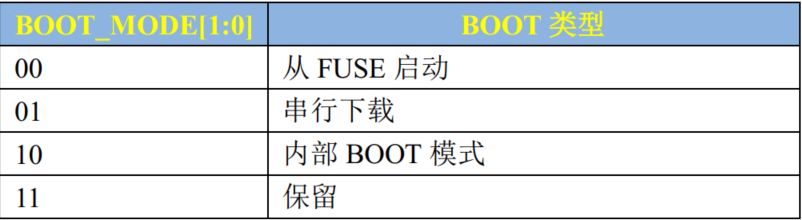
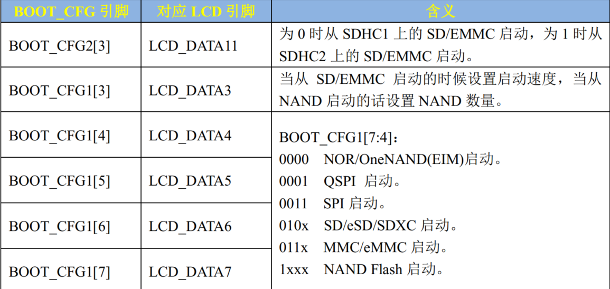

00 开发板启动方式选择
开发板启动流程
Linux(Cortex A系列)芯片和STM32不一样，除了能从内部Flash启动，还可以从其他多种外部介质中启动，比如SD卡，EMMC，NAND Flash等。
芯片的启动可以分为启动方式选择、启动设备选择2个问题
启动方式
以I.MAX6ULL为例，它的启动方式有4种，具体选择哪种由芯片上特定的引脚BOOT_MODE0和1决定，这点和STM32类似，STM32芯片上也有BOOT0和BOOT1这样的引脚。

- 通常只使用方式2和3，绝对不能使用方式1
不管是哪种方式，都依赖SoC内部的BOOT ROM
串行下载
首先运行BOOT ROM中的代码，初始化基本外设，通过USB OTG或者串口的形式将代码下载到板子的DDR上，这个下载需要用NXP提供的软件MfgTool，一般用于设备最终量产时
内部BOOT模式
首先运行BOOT ROM中的代码，初始化基本外设(比如SD卡这样的boot设备)，再从对应的boot设备中将代码拷贝到指定的RAM（一般是DDR）中运行
Boot ROM初始化内容
初始化时钟
初始化启动设备：启动设备由芯片对应的GPIO的高低电平决定——板子上的拨码开关
内部 boot ROM 为了加快执行速度会打开 MMU 和 Cache，下载镜像的时候 L1 ICache 会打开，验证镜像的时候 L1 DCache、L2 Cache 和 MMU 都会打开。一旦镜像验证完成，boot ROM就会关闭 L1 DCache、L2 Cache 和 MMU
启动介质选择
启动设备如何选择每个芯片应该都不同，这部分要看数据手册/参考手册，上面有详细的介绍
镜像烧写
裸机开发时，编译完会生成一个.bin文件，但该文件不能直接烧到SD卡，需要加上一个头部信息，变成.imx格式
但是一般不需要手动加上头部信息，使用imxdownload工具即可将bin转换成imx格式，并下载到SD卡
最终烧写的.imx文件包含以下几个部分：
Image Vector Table(IVT)：包含了ROM中一系列的地址
Boot Data：启动数据，包含了镜像要拷贝到哪个地址及镜像大小
Device Configuration Data(DCD)：设备配置信息。在设备启动时，所有寄存器都会被恢复初值，DCD用来配置这些寄存器(主要是时钟、DDR3的)
用户代码可执行文件，比如
led.bin
启动时，执行内部Boot ROM时，会把这个.imx镜像拷贝到DDR里执行